Tasarım Deseni(Patern) Nedir?
Patern kavramı; "klişeleşmiş durumlar ya da sorunlar için geliştirilmiş, belirli bir ismi olan ve dökümante edilmiş, nesne yönelimli standart tasarım çözümleri" biçiminde tanımlanabilir.
Paternler kullanılarak, belirli sorunlar herkes tarafından bilinen standart yöntemlerle daha kolay bir biçimde çözümlenebilmektedir.
Böylece tipik bir sorunla karşılaşan bir programcı Amerika'yı yeniden keşfetmek zorunda kalmayacak, ilgili paterni kullanarak sorunu hızlı bir biçimde çözümleyebilecektir.
Patern kavramı aslında günlük hayatta, farkında bile olmadan kullandığımız bir olgudur. Örneğin;
- Satrançtaki Rok gibi bazı hamleler veya açılışlar,
- Tavlada kapı alan zar kombinasyonları,
- Müzikteki akorlar veya makamlar,
- Elektronikte sıkça kullanılan bazı tipik devre tasarımları(Multivibratör, Tam Dalga Doğrultucusu devresi, vb.)
NYP'de de zaman içinde böyle tasarım kalıpları geliştirilmiş olup, ihtiyaç duyduğumuz durumlarda aynı şekilde kullanmaktayız.
Varolan bir kod veya küyüphane üzerinde çalışırken, uygulanmış olası bir paterni keşfeden programcı, orada hangi gerekçeyle ne yapılmak istendiğini hemen anlayabilecektir.
DataTable tbl = new DataTable();
//...
DataRow r = tbl.NewRow();
Pattern Kümeleri(Cluster)
Patternler yazılım mühendisliğinde çeşitli düzeylerde örneğin hem implementasyon hem de mimari düzeyde kullanılmaktadır.
Tasarım Desenleri implementasyona ilişkin patternler olup, kısaca GoF biçiminde isimlendirilir.
Öte yandan MVC, MVP, Transaction Script, Table Module gibi patternler ise mimari paternlerdir.
Bunların yanı sıra yeniden yapılandırma(refactoring) paternleri diye bilinen üçüncü bir gruptan daha bahsedilir.
İdiom Kavramı
Bir patternin bir programlama dilinde uygulanmasını kolay hale getiren veya söz konusu paterne doğrudan alternatif olan ve dilin kendisine ilişkin yerleşik özelliklere idiom denir.
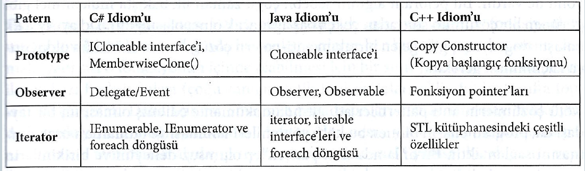Anti-Patern Kavramı
İlk kez 1995 yılında Andrew Koenig tarafından kullanılan soyut bir kavramdır.
Aslında Anti-paternler de birer paterndir.
Yazılımsal bir problemi bilinen ve doğru çözüm olarak kabul edilmiş bir paterni kullanmak yerine özgün bir yöntemle çözmek demektir.
Ancak bu formal tanımın dışında; pratikte kötü çözüm, kötğ fikir gibi pejoratif algısal bir yönü de vardır.
Anti-Patern Örnekleri
Kötü çözümlerin anti pattern'ler adı altında dökümante edilmiş olmasının bir faydası da, programcıların bu yöntemleri tanıması ve bunlardan uzak durmasını sağlamaktır.
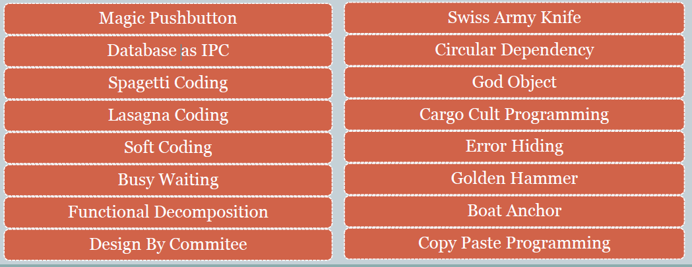GOF Sistematiği
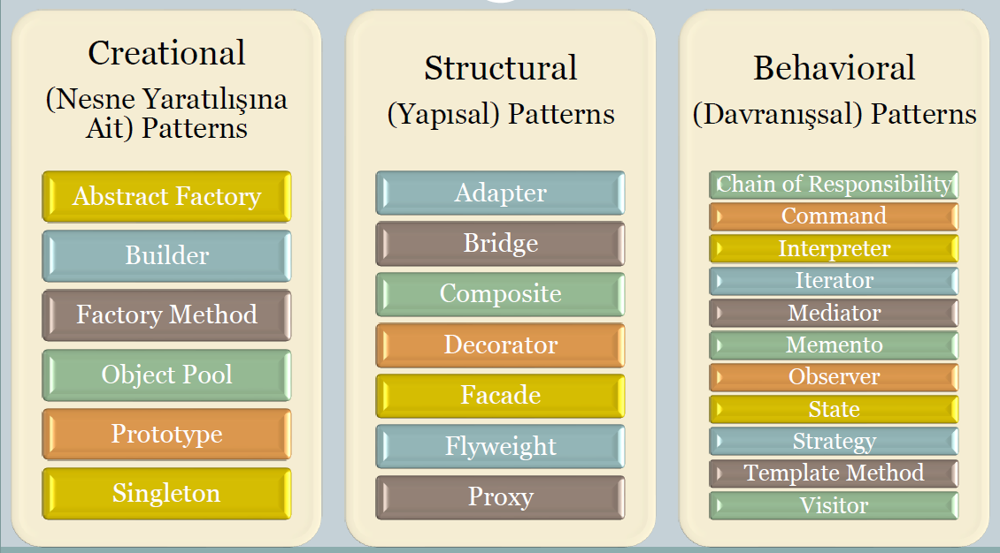-Nesne Oluşturulmasına/Yaratılmasına İlişkin (Creational) Paternler
Bu patternlerin genel ve ortak karakteristiği; çeşitli biçimlerdeki nesne yaratılış işlemlerini nesneyi kullanacak olan kişiden gizlemeleri ve soyutlamalarıdır.
Bu noktada; "nesne yaratma" ifadesi, İngilizce terminolojideki "create" kelimesinden yola çıkılarak kullanılmaktadır.
Mevcut nesnelerin birleşiminden oluşan kompozit nesneler için ise "oluşturma" kelimesi kullanılacaktır.
Sınıf Ve Nesne Kavramları
Nesne yönelimli programlama(NYP) terminolojisinde sınıf ve nesne kavramları aynı anlama gelmez.
Nesnelerin birbirinden ayırt edilebilmesini sağlayan üç karakteristikleri vardır:
- Durum Bilgisi (State)
- Davranış (Behaviour)
- Kimlik (Identity)
Encapsulation ve Abstraction
Encapsulation
Bir sınıftan üretilen nesnenin içsel çalısması ile ilgili olan özellik ve işlevleri kendisini kullanacak kişinin algısından uzaklaştıracak şekilde ayarlanmasına(gizlenmesine, paketlenmesine kapsüllenmesine) encapsulation denir ve programlama dillerinde erişim belirteçleri yoluyla uygulanır.
Kullanımından sağlanan getiriler;
- Nesnenin kullanımı karmaşıklık düzeyinin azalması nedeniyle kolaylaşır.
- Kullanıcıya hissettirilmeden değişiklik yapılabilir.
- Nesnenin çalışması ile ilgili önemli bilgiler gizlenebilir.
Abstraction
Encapsulation nesnenin kullanım süreciyle ilişkiliyken; abstraction kavramı tasarım süreciyle ilgilidir.
- Tasarımın birbirinden soyutlanmış katmanlara ayrılmasıdır. Bir katmanın tasarımında çok önemli olan bir unsur diğerinde tümüyle ihmal edilebilir.
- Bunun yazılımsal karşılığı aynı varlığın farklı modellemelerinin yapılabilmesidir.
- Örneğin iş kurallarının yazıldığı bir katman, kullanıcı arayüzüne ilişkin unsurlardan soyutlanmalıdır. Bu prensibe göre; iş katmanındaki bir sınıfa ait fonksiyonun elde ettiği verileri ekrana basmak yerine, bu veriyi geri dönüş değeri olarak vermesi ve ekrana basma görevini sunum katmanına bırakması gerekir.
UML(Unified Modelling Language)
Programlama dillerinden bağımsız, formal ve standart bir modellemeyle yazılım geliştirme metodolojisine duyulan ihtiyaca cevap vermek üzere 1991 yılında James Rumbaugh tarafından OMT(Object Modelling Technique) isimli metodoloji geliştirildi.
Hemen hemen aynı dönemde Grady Booch OOAD(Object Oriented Analysis & Design) ismini verdiği çalışmayı sürdürüyordu.
1994'te kendilerine OOSE(Object Oriented Software Engineering) isimli çalışmasıyla katılan Ivar Jacobson ile birlikte, bu üçlü çalışmalarını birleştirerek daha sonralar adı UML ismiyle anılacak tek bir dil haline getirdi.
UML ismindeki Unified(Birleştirilmiş) ifadesi bu nedene dayanmaktadır.
UML; birleştirilmiş modelleme dili özellikle büyük çaplı kurumsal bir uygulama geliştirileceği zaman kullanılması gerekir ve nesne yönelimli programlama ile geliştirilecek olan projeyi modellemenin standartlaşmış notasyonunu teşkil eder.
Profesyonel anlamda uygulama geliştirmenin ilk şartı; kodlamaya başlamadan önce kapsamlı bir analiz ve mantıksal tasarım çalışması yapmaktır.
Proje geliştirme süreçlerinin başlangıçta öngörülen zamanın ötesine geçmesi, proje maliyetlerini de olumsuz etkiler.
İyi tasarlanmış ve dökümante edilmiş projelerin test ve bakım işlemleri de daha kolay olur.
Tasarlanacak sisteme farklı açılardan yaklaşıp, bunun sonucunda yapılan modellemeyi dökümante edebilecek farklı UML diyagramları vardır.
UML DİYAGRAMLARI
UML diyagramları 3 grupta sınıflandırılır.
1. YAPISAL MODELLEME DİYAGRAMLARI
- Class
- Object
- Deployment
- Composite Structure
- Component
2. DAVRANIŞSAL MODELLEME DİYAGRAMLARI
- Sequence
- Communication
- State
- Activity
- Timing
3. İŞLEVSEL MODELLEME DİYAGRAMLARI
- Use Case
Sınıf Diyagramları
- Bu diyagramlar genellikle iş katmanını modellemek için kullanılır.
- Sistemin statik yapısını ortaya koymak amacıyla tasarlanırlar.
- Sınıflar ve aralarındaki ilişkiler standardize edilmiş semboller ile çizilir.
- Sınıflar yatay çizgilerle üçe ayrılmış dikdörtgen sembolüyle temsil edilir. 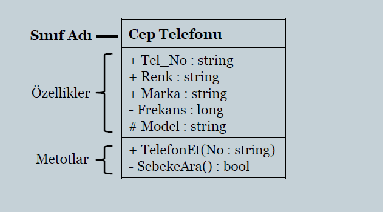
- Gerektiğinde sınıfın hangi namespace içinde yer aldığı da belirtilebilir. 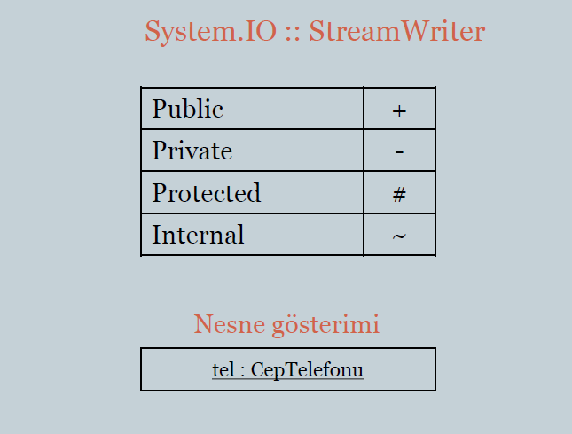 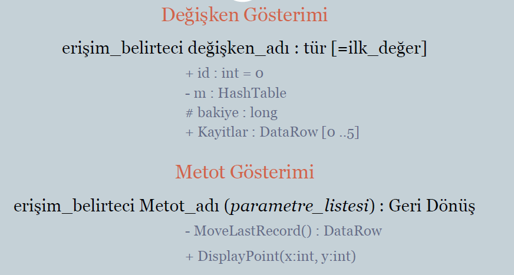
- Sanal(abstract) metotların isimleri italik yazılır.
- Statik üyeler altı çizili yazılarak vurgulanabilir. 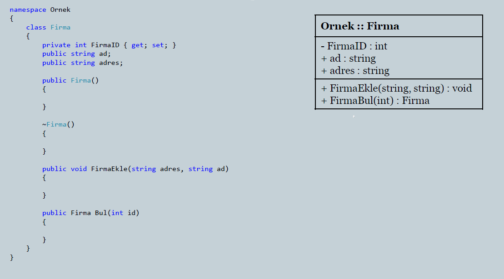
Nesneler Arasındaki İlişkiler
UML'de sınıflar ve/veya nesneler arasındaki ilişkilerin listesi aşağıda verilmiştir.
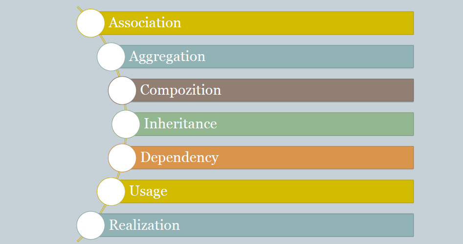1. Association (Referans veya Birliktelik) İlişkisi
- Bir sınıfın başka bir sınıf türünden nesne referansı taşımasına denir.
- Association ilişkisi iki nesne arasına çizilen düz bir çizgi ile gösterilir.
- Çoğunlukla bu çizginin üzerine ilişkiye verilen isim yazılır. 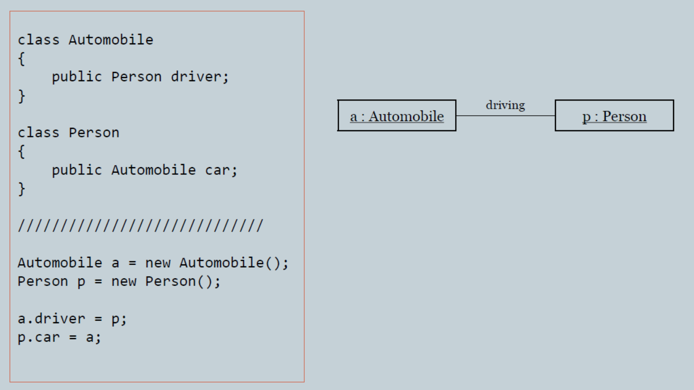
Multiplicity 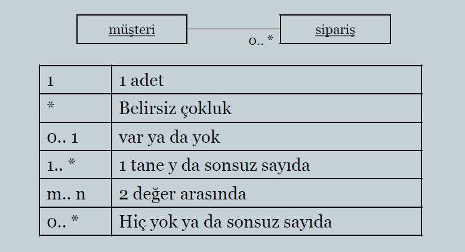Multiplicity gösterimi açıkça yapılmamış bir diyagramda söz konusu nesneler arasında bire-bir ilişki olduğu kabul edilir.
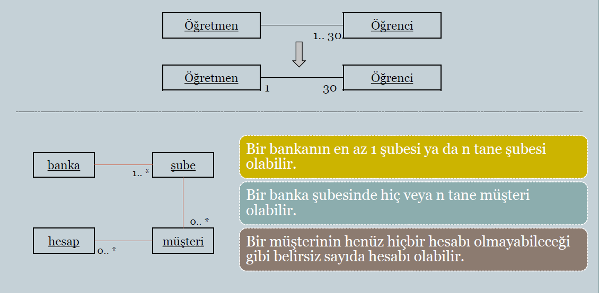
Navigability
- Sadece bir nesne diğeri türünde referans tutuyorsa buna tek yönlü(unidirectional) association denir.
- Bu durum, yönü referansı tutulan nesneye doğru bir ok ile gösterilir.
- Örneğin siparişin hangi müsteriye ait olduğunu ifade etmek amacıyla Sipariş sınıfında Müsteri türünde bir referans tutuluyor ise;
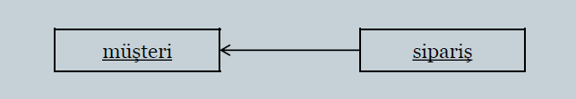- Öte yandan ok ile yön belirtilmezse bu durum ya hangi nesnenin hangi nesneyi referanse ettiğini bilmiyor olduğumuz anlamına gelir ya da her ikisinin de birbirini referanse ettiği(bidirectional assocation) anlamına gelir.
2. Aggregation (Barındırma, içerme) İlişkisi
- Aggregation, assocation'ın özel bir halidir.
- Nesneler arasındaki parça-bütün ilişkisini modeller.
- Aggregation ve Association arasında kodlama anlamında eliğin bir fark yoktur.
- Her aggregation aynı zamanda bir assocation ilişkisidir.
- Kodlama bakımından değil kavramsal olarak birbirlerinden farklıdırlar. 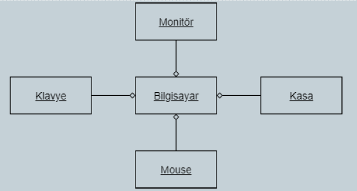
Composition(Bağımlı İyelik) İlişkisiBu ilişkide parça ve bütün birbirinden bağımsız şekilde bulunamaz. Ayrıca bir parça aynı anda birden fazla bütüne ait de olamaz. UML'de bu ilişki içi dolu baklava şekli ile gösterilir.
- Bütün nesnenin ömrü sonlandığında parçanın ömrü de sonlanıyor mu?
- Parça bir yere taşındığında bütün de onunla birlikte taşınıyor mu?
- Parça kolaylıkla başka bir bütüne ait hale getirilebiliyor mu?
Inheritance(Kalıtım) İlişkisiUML'de taban ve türeyen sınıflar arasındaki kalıtım ilişkisi bazı kaynaklarda generalization(genelleme) olarak da adlandırılır.
Kalıtım ilişkisi yönü türeyen sınıftan taban sınıfa oğru olan içi boş bir ok sembolü ile gösterilir.
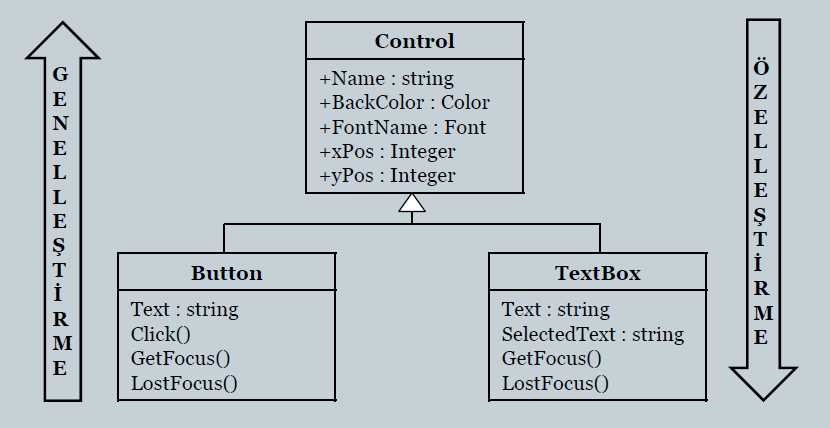
Relization(Gerçekleme) İlişkisiUML'de sınıftan interface'e doğru çizilen bu ilişki özellikle C# ve Java dillerinde polimorfik tasarımlar için sıklıkla kullanılır. Ancak gösterimde kalıtımdan farklı olarak kesikli çizgi kullanılır.
Bazı kaynaklarda bu ilişki lolipop sembolü ile de gösterilir.
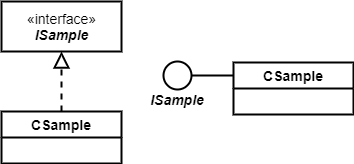
Dependency(Bağımlılık) İlişkisiTerminolojide başka bir nesneye bağımlı olan nesneler, hedef; bağımlı olunan nesneler ise kaynak olarak adlandırılır. Dependency ilişkisinin dayadığı temel fikir, kaynak nesne üzerinde yapılan herhangi bir değişimin hedef durumundaki nesneye de yansımasıdır. 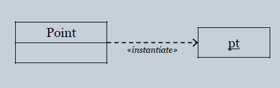
Use(Kullanma) İlişkisiUse sürekli bir ilişki değildir daha çok bir anlık kullanıp bırakma biçimindedir. Örneğin yoldan geçen bir taksiye bindiğinizde onu sadece bir süreliğine kendi amacınız için kullanırsınız ama taksi size ait olmaz. Use ilişkisinde nesneler arasında çalışma zamanında geçici bir ilişki oluşur. Bir referans tutmak biçiminde olmayan bu ilişki genelde üç şekilde kurulur. 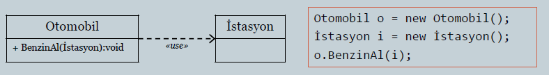
- Statik olarak
- Bir nesneye ait bir metodun, use ilişkisinde olduğu nesnenin metodunu parametre olarak alması
- Lokal veya global kullanım
Dependency ve Use birbirine oldukça yakındır. Use ilişkisinin olduğu nesneler arasında kendiliğinden bir bağımlılık ortaya çıkabilir.
NESNE OLUŞTURULMASINA/YARATILMASINA İLİŞKİN (Creational) PATTERNLER
Bu patternlerin genel ve ortak karakteristiği; çeşitli biçimlerdeki nesne yaratılış işlemlerini nesneyi kullanacak olan kişiden gizlemeleri ve soyutlamalarıdır.
Bu noktada; "nesne yaratma" ifadesi, İngilizce terminolojideki "create" kelimesinden yola çıkılarak kullanılmaktadır.
Mevcut nesnelerin birleşiminden oluşan kompozit nesneler için ise "oluşturma" kelimesi kullanılacaktır.
1. Singleton Tasarım Deseni
Singleton deseni bir programın yaşam süresince belirli bir nesneden sadece bir örneğinin(instance) olmasını garantiler.
Örneğin;
- Windows'taki taskbar, dock menu tüm pencereler için aynıdır.
- ASP.NET'deki Application nesnesi,
- Java'da bir servlet nesnesi,
- Android kütüphanesindeki servis nesneleri.
Singleton Nasıl Çalışır ?
- Bu paternin uygulanacağı sınıfın private bölümünde sınıfın kendisi türünden bir adres saklayan static bir değişken tanımlanmalıdır.
- Söz konusu sınıf türünden nesnenin yaratılışı sadece bir kez yapılmak istendiği için kurucu metot private veya protected tanımlanmalıdır.
- Kurucu metodun bir anlamda yerini alacak static bir üye metot tanımlanmalıdır. Bu metot 1.maddede belirtilen static değişkeni geri döndürecek şekilde yazılmalıdır.
Örnek-1;
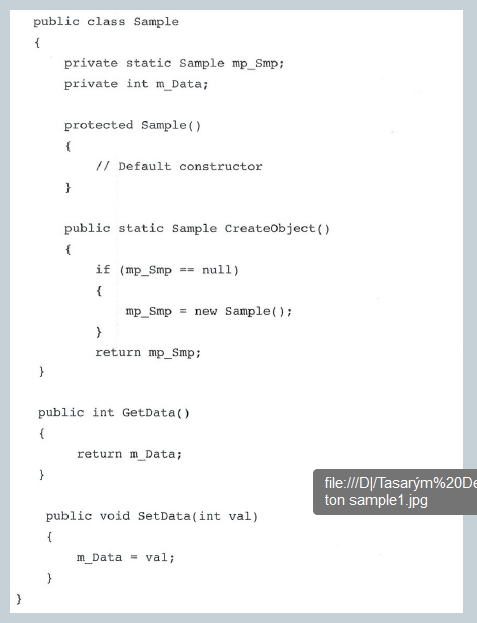 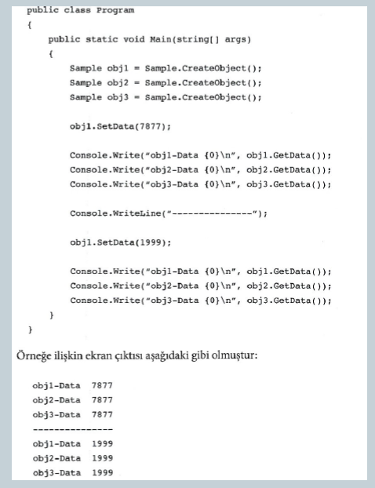Verilen örnek tek kanallı uygulamalarda sorunsuz çalışmasına rağmen aksi durumda söz konusu nesnenin her zaman tek örneğinin yaratılacağını garanti edemez. Bunu engellemek için thread senkronizasyon mekanizmalarından yararlanılmalıdır.(Mutex,Monitor, vb.)
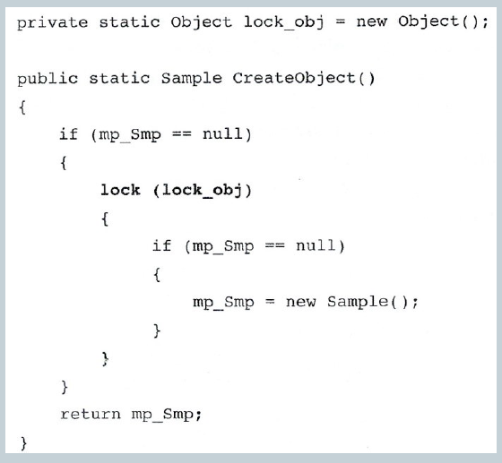
2. Factory Method Tasarım Deseni
Factory method tasarım deseninin ana amacı "genişletilebilirlik" tir.
Birbirinden yapısal olarak farklı ancak aynı zamanda birçok karakteristik özelliği ortak olan nesnelerin yönetimi, oluşturma kıstaslarının belirlenmesi ve yaratılması için Factory metodu kullanılır.
Bu desen sistemimizde belli özelliklere sahip soyut sınıflar oluşturmak istediğimizde kullanılır.